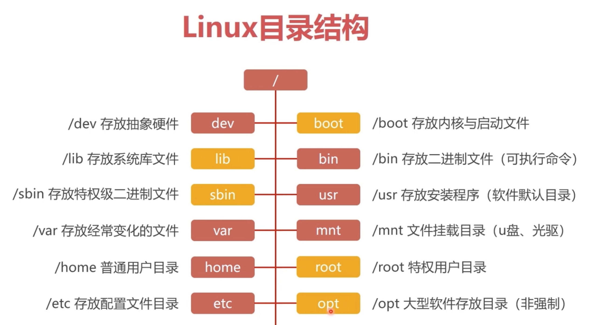
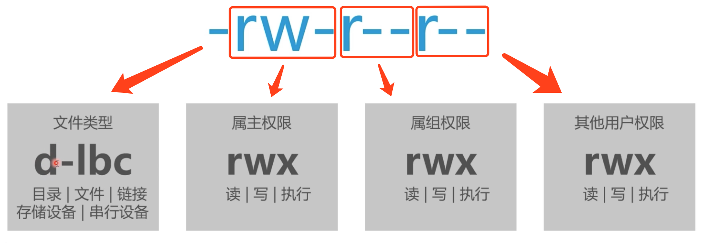

linux目录结构

linux常用命令(命令查询: http://man.linuxde.net/)
ssh远程登录：ssh
新建文件或目录：touch/mkdir
- 实例
创建一个hello.txt文件
touch hello.txt
创建一个myproject目录
mkdir myproject
写入文件：echo
- 实例
在hello.txt中写入Thanks
echo Thanks > hello.txt
查看文件内容：cat
- 实例
查看hello.txt中的内容
cat hello.txt
// Thanks
复制文件或目录：cp
- 实例
复制文件hello.txt,新文件为new.txt
cp hello.txt new.txt
ls
// hello.txt new.txt
复制目录myproject,新目录为newproject
cp -r myproject newproject
// -r 递归复制目录的内容
删除文件或目录：rm
- 实例
删除文件hello.txt
cp hello.txt new.txt
ls
// new.txt
删除目录myproject
rm -r myproject
ls
// newproject
// -r 递归删除目录的内容
rm -rf myproject
// -rf 递归删除目录的内容，不给出提示。
移动文件或目录：mv
- 实例
移动目录newproject到home目录下
mv -f newproject /home
cd home
ls
// newproject
// -f 强制覆盖已存在的目录或文件
查看文件及目录属性：ls
- 实例
查看当前目录下所有文件及目录的属性
ls -l
// drwxr-xr-x root root 7 Apr 8 14:39 myproject
// -rw-r--r-- root root 7 Apr 8 14:39 hello.txt
修改文件及目录权限：chmod
- 实例
修改当前文件及目录权限
chmod 700
// 读对应权限4 写对应权限2 执行对应权限是1 没有权限对应是0
// 700 的百位是属主权限，十位是属组权限，个位是其他用户权限（7表示读、写、执行权限 4+2+1）
